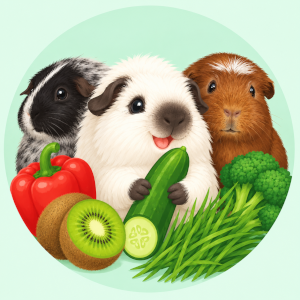
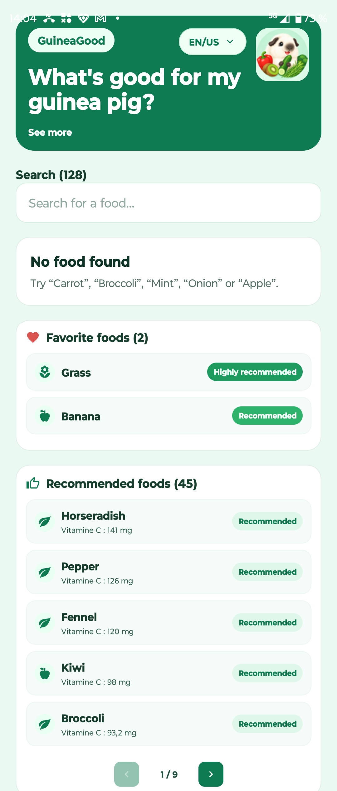
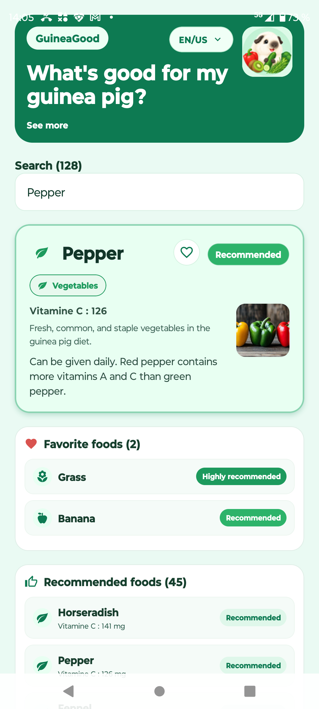
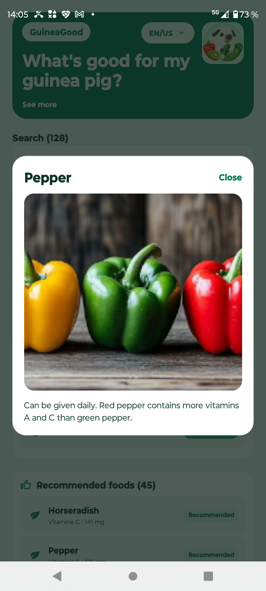

Catalogue des aliments
Parcourez une base d'aliments adaptés aux cochons d'inde avec des informations claires sur leur rôle et leur usage.

Application mobile
Découvrez les aliments sûrs, utiles et adaptés aux cochons d'inde grâce à une expérience simple et pédagogique.
GuineaGood aide à découvrir les aliments adaptés aux cochons d'inde, leurs groupes, leurs bienfaits et leurs usages recommandés. Une application conçue pour informer et guider les propriétaires responsables.
Parcourez une base d'aliments adaptés aux cochons d'inde avec des informations claires sur leur rôle et leur usage.
Trouvez un aliment en quelques secondes grâce à une recherche intuitive et multilingue.
Comprenez les bienfaits, les catégories et les indications clés pour faire de meilleurs choix pour votre animal.
La politique de confidentialité est accessible facilement et les données sont traitées de manière claire.



Disponible
GuineaGood est disponible sur le Google Play Store. Utilisez le lien ci-dessous pour retrouver la fiche de l'application.